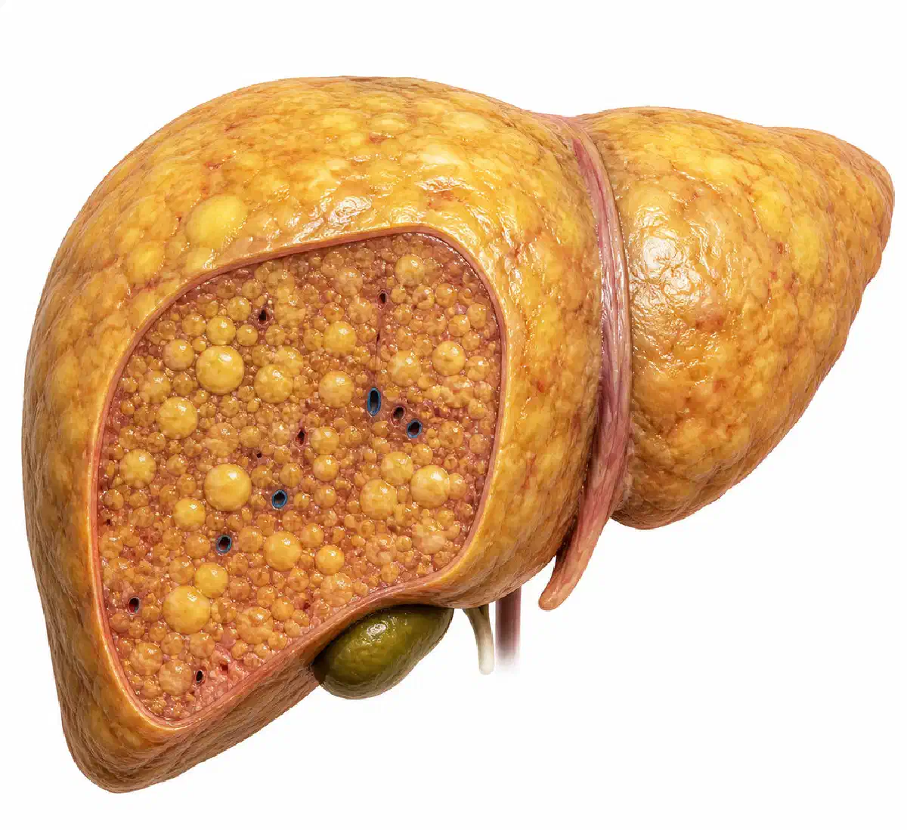

+38(068)
79 72 782
+38(068)
79 72 782Стеатоз печени: причины, симптомы, стадии и лечение
Объясняет врач нарколог


Бесплатная консультация, работаем круглосуточно 24/7
Объясняет врач нарколог

Дата написания: 2 мая 2026 г.
Последнее обновление: 2 мая 2026 г.
Стеатоз печени — это патологическое накопление жира в печёночных клетках. В норме в печени может присутствовать небольшое количество жировых включений, но при их избытке нарушается работа органа. Медицинские источники обычно рассматривают стеатоз как значимое накопление жира в печени, когда оно превышает примерно 5% массы органа или клеток печени.
Печень участвует в обмене белков, жиров и углеводов, обезвреживает токсические вещества, перерабатывает лекарства, участвует в пищеварении и поддержании энергетического баланса. Когда в её клетках накапливается жир, орган начинает работать с повышенной нагрузкой. На начальном этапе это состояние может быть обратимым, особенно если вовремя устранить причину и изменить образ жизни. Стеатоз может быть связан с алкоголем, лишним весом, инсулинорезистентностью, сахарным диабетом, неправильным питанием, малоподвижным образом жизни, приёмом некоторых препаратов и другими нарушениями обмена веществ. Поэтому лечение всегда должно начинаться не только с подтверждения диагноза, но и с поиска факторов, которые привели к развитию заболевания.
Причины стеатоза печени могут быть разными, но чаще всего заболевание развивается на фоне нарушения обмена веществ. Одним из главных факторов считается избыточный вес, особенно если жир откладывается в области живота. В таком случае повышается риск инсулинорезистентности, нарушается обмен глюкозы и жиров, а печень начинает активнее накапливать липиды.
Важную роль играет питание. Избыток калорий, частое употребление жирной пищи, сладких напитков, продуктов с большим количеством сахара, выпечки, фастфуда и рафинированных углеводов создаёт нагрузку на обмен веществ. Если организм получает больше энергии, чем расходует, лишние вещества постепенно откладываются в виде жира, в том числе в печени. Отдельной причиной является алкоголь. Даже если человек не считает употребление спиртного чрезмерным, регулярная алкогольная нагрузка может повреждать клетки печени и способствовать развитию жировой инфильтрации. Также стеатоз может возникать при сахарном диабете 2 типа, повышенном холестерине, гормональных нарушениях, резком снижении веса, длительном голодании, хронических заболеваниях желудочно-кишечного тракта и приёме некоторых лекарственных препаратов.
На ранних стадиях стеатоз печени часто протекает без ярких симптомов. Именно поэтому заболевание нередко выявляют случайно — при профилактическом обследовании, УЗИ органов брюшной полости или изменениях в биохимическом анализе крови. Многие люди долго не ощущают боли и не связывают слабость или дискомфорт с состоянием печени. Mayo Clinic также отмечает, что жировая болезнь печени может протекать без заметных проявлений или сопровождаться неспецифическими симптомами. Иногда пациент может жаловаться на тяжесть или дискомфорт в правом подреберье, быструю утомляемость, снижение работоспособности, ощущение вздутия, нарушение пищеварения, тошноту после жирной пищи. Эти признаки не являются специфическими только для стеатоза, поэтому по ним невозможно поставить точный диагноз без обследования.
Важно понимать, что отсутствие боли не означает отсутствие проблемы. Печень долго компенсирует нарушения и может не подавать выраженных сигналов даже при значительной нагрузке. Поэтому людям с лишним весом, диабетом, повышенным холестерином, регулярным употреблением алкоголя или наследственной предрасположенностью стоит периодически проверять состояние печени.
Без лечения и контроля стеатоз печени может прогрессировать. Сначала в клетках печени накапливается жир, затем может присоединяться воспаление. Если повреждение продолжается, организм запускает процесс образования соединительной ткани, то есть фиброза. Чем больше рубцовой ткани появляется в печени, тем сильнее нарушается её структура и функция.
Главная опасность заключается в риске перехода стеатоза в стеатогепатит, фиброз, цирроз и печёночную недостаточность. Кроме того, жировая болезнь печени часто связана с сердечно-сосудистыми рисками, сахарным диабетом, нарушением обмена холестерина и повышенным риском хронических заболеваний. Healthdirect указывает, что жировая болезнь печени может быть связана с воспалением, фиброзом, циррозом, а также повышенным риском сердечно-сосудистых проблем. Опасность стеатоза ещё и в том, что человек может долго не замечать ухудшения. Когда появляются выраженная слабость, желтушность кожи, увеличение живота, отёки, сосудистые изменения или нарушения свёртываемости крови, это может говорить уже о более серьёзном поражении печени. Поэтому важно не ждать тяжёлых симптомов, а обращаться к врачу на ранних этапах.
Алкоголь является одним из значимых факторов повреждения печени. Он перерабатывается в печени и образует токсичные продукты обмена, которые могут повреждать клетки органа, усиливать воспаление и нарушать жировой обмен. При регулярном употреблении спиртного риск развития алкогольного стеатоза значительно возрастает.
Алкогольный стеатоз может развиваться постепенно. Сначала человек может не ощущать серьёзных изменений, но печень уже испытывает постоянную токсическую нагрузку. Если употребление алкоголя продолжается, жировое накопление может перейти в алкогольный гепатит, фиброз и цирроз. Особенно опасно сочетание алкоголя с лишним весом, неправильным питанием, вирусными гепатитами или приёмом лекарств, влияющих на печень.
При выявлении стеатоза печени врач обычно рекомендует полностью отказаться от алкоголя или максимально строго ограничить его употребление в зависимости от состояния пациента. Самостоятельно оценить безопасный уровень невозможно, потому что степень повреждения печени у разных людей отличается. Чем раньше прекращается алкогольная нагрузка, тем выше шанс стабилизировать состояние печени и снизить риск осложнений.
Неалкогольный жировой гепатоз печени развивается не из-за алкоголя, а чаще на фоне метаболических нарушений. В современной медицинской терминологии всё чаще используется понятие MASLD — метаболически ассоциированная стеатотическая болезнь печени. Она связана с ожирением, сахарным диабетом 2 типа, инсулинорезистентностью, повышенным давлением, нарушением уровня холестерина и другими обменными факторами. Международные рекомендации EASL–EASD–EASO 2024 года рассматривают MASLD как заболевание, связанное с документированным стеатозом и кардиометаболическими факторами риска.
Неалкогольный жировой гепатоз может возникать даже у людей, которые не употребляют алкоголь. При этом внешне человек не всегда выглядит тяжело больным. Иногда заболевание выявляют у пациентов с умеренным лишним весом, нарушением сахара крови или малоподвижным образом жизни. Главная задача при неалкогольном стеатозе — не только «почистить печень», а восстановить обмен веществ. Для этого важно скорректировать питание, снизить вес при его избытке, повысить физическую активность, контролировать сахар, холестерин и артериальное давление. Такой подход помогает уменьшить нагрузку на печень и замедлить прогрессирование заболевания.
Стадии стеатоза печени отражают, насколько выражено накопление жира в клетках печени и есть ли признаки дальнейшего повреждения органа. Заболевание развивается постепенно: сначала жировые капли накапливаются внутри гепатоцитов, затем при неблагоприятных условиях может присоединяться воспаление, а со временем — фиброзные изменения. Чем раньше выявлен стеатоз, тем выше вероятность остановить процесс и улучшить состояние печени без тяжёлых последствий.
Самая опасная стадия прогрессирования — цирроз печени. На этом этапе структура органа значительно нарушается, формируются выраженные рубцовые изменения, а здоровой функционирующей ткани становится всё меньше. Печень уже не может полноценно выполнять свои задачи: участвовать в пищеварении, обмене веществ, синтезе белков, обезвреживании токсинов и поддержании нормального состава крови. Цирроз может приводить к тяжёлым осложнениям и требует постоянного медицинского наблюдения.
Диагностика стеатоза печени начинается с консультации врача. Специалист оценивает жалобы, образ жизни, питание, массу тела, наличие хронических заболеваний, употребление алкоголя, принимаемые препараты и семейный анамнез. После этого назначаются лабораторные и инструментальные обследования. Чаще всего применяют УЗИ печени, биохимический анализ крови, показатели печёночных ферментов, липидограмму, глюкозу крови, инсулинорезистентность и другие анализы по показаниям. При необходимости врач может назначить эластографию для оценки плотности печени и риска фиброза. В сложных случаях могут потребоваться дополнительные исследования, чтобы исключить вирусные гепатиты, аутоиммунные, наследственные или токсические причины поражения печени.
Важно не ограничиваться только фактом наличия жира в печени. Для правильной тактики лечения нужно понять, есть ли воспаление, фиброз, метаболические нарушения и факторы риска прогрессирования. Именно комплексная диагностика позволяет подобрать эффективный и безопасный план лечения.
УЗИ печени — один из самых распространённых методов выявления стеатоза. Исследование помогает оценить размеры печени, её структуру, эхогенность, состояние желчного пузыря и других органов брюшной полости. При стеатозе печень часто выглядит более «светлой» на УЗИ из-за изменения плотности ткани.
Преимущество УЗИ заключается в доступности, безопасности и безболезненности процедуры. Оно не требует сложной подготовки и может использоваться как первичный метод обследования. Однако УЗИ не всегда точно определяет степень стеатоза и не позволяет полноценно оценить воспаление или ранний фиброз. Поэтому результаты УЗИ нужно рассматривать вместе с анализами крови, жалобами пациента и другими данными. Если есть подозрение на прогрессирование заболевания, врач может рекомендовать эластографию, дополнительные лабораторные тесты или консультацию гастроэнтеролога/гепатолога.
При подозрении на стеатоз печени врач может назначить биохимический анализ крови. Обычно оцениваются АЛТ, АСТ, билирубин, щелочная фосфатаза, ГГТ, общий белок и другие показатели. Эти анализы помогают понять, есть ли признаки повреждения печени или нарушения её функции.
Также важны показатели обмена веществ: глюкоза крови, гликированный гемоглобин, инсулин, липидограмма, уровень триглицеридов и холестерина. Поскольку стеатоз часто связан с метаболическими нарушениями, эти данные помогают определить причину заболевания и оценить общий риск для здоровья. Иногда дополнительно назначают анализы на вирусные гепатиты, аутоиммунные маркеры, ферритин, показатели свёртываемости крови и другие исследования. Набор анализов зависит от конкретной ситуации. Самостоятельно сдавать «всё подряд» не всегда рационально — лучше, чтобы обследование назначал врач после осмотра и оценки факторов риска.
На ранних стадиях стеатоз печени часто можно стабилизировать и значительно уменьшить. Печень обладает высокой способностью к восстановлению, если устранить факторы, которые её повреждают. Особенно хорошие результаты возможны при снижении лишнего веса, отказе от алкоголя, коррекции питания, повышении физической активности и лечении сопутствующих заболеваний.
Однако важно понимать, что лечение стеатоза — это не разовая процедура и не короткий курс таблеток. Если человек возвращается к прежнему питанию, продолжает употреблять алкоголь, не контролирует вес, сахар и холестерин, жир в печени может накапливаться снова. Если уже развился выраженный фиброз или цирроз, полностью вернуть печень к исходному состоянию сложнее. Но даже в таких случаях лечение помогает замедлить прогрессирование, снизить риск осложнений и улучшить качество жизни. Чем раньше выявлено заболевание, тем больше возможностей для восстановления.
Лечение стеатоза печени должно быть комплексным. Основная цель — уменьшить количество жира в печени, снизить воспаление, предотвратить развитие фиброза и устранить причину заболевания. Универсальной таблетки, которая одинаково подходит всем пациентам, не существует. Тактика зависит от веса, питания, уровня сахара, холестерина, употребления алкоголя, сопутствующих болезней и результатов обследования. В большинстве случаев основой лечения становится изменение образа жизни. Врач может рекомендовать снижение массы тела при её избытке, коррекцию рациона, регулярную физическую активность, отказ от алкоголя и контроль метаболических показателей. Mayo Clinic указывает, что лечение жировой болезни печени часто включает снижение веса, здоровое питание, физическую активность и контроль сопутствующих состояний.
Медикаментозное лечение назначается индивидуально. Препараты могут применяться для коррекции обмена веществ, лечения сахарного диабета, снижения холестерина, поддержки печени или терапии сопутствующих нарушений. Самостоятельно принимать лекарства, БАДы или «гепатопротекторы» без обследования не стоит, потому что не все средства имеют доказанную эффективность и не все безопасны при проблемах с печенью.
Диета при стеатозе печени направлена на снижение нагрузки на орган и нормализацию обмена веществ. Важно не просто отказаться от жирной пищи, а выстроить сбалансированный рацион, который помогает контролировать вес, сахар и уровень холестерина. Основу питания обычно составляют овощи, нежирные источники белка, цельнозерновые продукты, бобовые, рыба, растительные масла в умеренном количестве и достаточное количество воды. Желательно ограничить сладкие напитки, избыток сахара, кондитерские изделия, фастфуд, жареную пищу, переработанные мясные продукты, избыток белого хлеба и продуктов из рафинированной муки. Особенно важно контролировать калорийность рациона, потому что даже «полезная» еда при переедании может мешать снижению веса.
При стеатозе не рекомендуются жёсткие голодные диеты и резкое похудение. Быстрая потеря веса может стать дополнительным стрессом для организма. Лучше снижать вес постепенно, под контролем специалиста, особенно если есть диабет, заболевания желчного пузыря, желудка, кишечника или другие хронические проблемы.
Образ жизни играет ключевую роль в лечении стеатоза печени. Даже небольшие, но регулярные изменения могут дать значимый результат. Важно повысить физическую активность, нормализовать сон, контролировать стресс, отказаться от алкоголя и снизить количество факторов, которые перегружают печень.
Физическая активность помогает улучшить чувствительность к инсулину, ускорить обмен веществ, снизить вес и уменьшить накопление жира в печени. Это не обязательно должен быть тяжёлый спорт. Для многих пациентов подходит ходьба, плавание, лечебная физкультура, велосипед, умеренные силовые нагрузки или другие безопасные виды активности. Также важно регулярно проходить контрольные обследования. Если стеатоз уже выявлен, врач может рекомендовать повторные анализы и УЗИ через определённый промежуток времени. Это помогает оценить динамику и понять, работает ли выбранная стратегия лечения.
Профилактика стеатоза печени основана на здоровом образе жизни и контроле обменных нарушений. Важно поддерживать нормальный вес, питаться сбалансированно, избегать избытка сахара и алкоголя, регулярно двигаться и своевременно лечить заболевания, которые повышают риск жирового поражения печени. Особое внимание профилактике стоит уделять людям с сахарным диабетом, инсулинорезистентностью, ожирением, повышенным холестерином, артериальной гипертензией и наследственной предрасположенностью. В таких случаях печень может страдать даже при отсутствии выраженных жалоб. Профилактика также включает осторожное отношение к лекарствам. Не стоит бесконтрольно принимать препараты, обезболивающие, гормональные средства, добавки или народные средства без консультации врача. Некоторые вещества могут создавать дополнительную нагрузку на печень, особенно если уже есть стеатоз или другие заболевания.
Обратиться к врачу стоит при тяжести или боли в правом подреберье, постоянной слабости, тошноте, нарушениях пищеварения, увеличении печени по УЗИ, повышенных печёночных ферментах в анализах или случайно выявленном жировом гепатозе. Даже если симптомы отсутствуют, консультация специалиста поможет понять причину стеатоза, оценить состояние печени и определить дальнейшую тактику наблюдения или лечения. Особенно важно не откладывать визит, если есть лишний вес, сахарный диабет, повышенный холестерин, регулярное употребление алкоголя, вирусные гепатиты или случаи заболеваний печени в семье. Эти факторы повышают риск прогрессирования стеатоза и перехода жировой инфильтрации в воспаление, фиброз или более серьёзные нарушения работы печени.
Получить консультацию и пройти обследование можно в таких городах: (Киев | Одесса | Харьков | Днепр | Запорожье | Львов | Черкассы) и другие города Украины. Врач поможет оценить результаты УЗИ, анализов крови, печёночных проб, уточнить возможные причины жирового гепатоза и подобрать индивидуальные рекомендации по питанию, образу жизни и дальнейшему контролю состояния печени.
Также поводом для срочного обращения являются желтушность кожи и глаз, выраженная слабость, потемнение мочи, светлый стул, отёки, увеличение живота, спутанность сознания или кровоточивость. Такие симптомы могут указывать не только на стеатоз, но и на более серьёзное поражение печени, поэтому в подобных случаях не стоит заниматься самолечением или откладывать медицинскую помощь. Стеатоз печени — это состояние, которое требует внимания, но при своевременном подходе его можно контролировать. Ранняя диагностика, отказ от вредных факторов, правильное питание, физическая активность и наблюдение у врача помогают снизить риск осложнений и поддержать здоровье печени на долгие годы.

Статья проверена экспертом
Могучев Станислав
Врач терапевт
Возможно интересная статья:
Янтарная кислота, Бетаргин и Энтеросгель при алкогольной интоксикации

Да, мы строго соблюдаем полную конфиденциальность на всех этапах лечения. Информация о пациенте, диагнозе и прохождении терапии не передаётся третьим лицам. Обращение к нам не влечёт постановку на учёт. Вы можете быть уверены в безопасности и анонимности.
Программа лечения разрабатывается индивидуально после консультации со специалистом. Учитываются вид зависимости, её длительность, физическое и психологическое состояние пациента. Такой подход позволяет повысить эффективность терапии и снизить риск срыва. Мы не используем шаблонные решения.
Да, мы сопровождаем пациентов и после основного курса лечения. Проводятся консультации, рекомендации по адаптации и профилактике рецидивов. При необходимости возможна дальнейшая психологическая поддержка. Это помогает сохранить результат и вернуться к полноценной жизни.
Номер телефона:
+380 (68) 797 27 82
+380 (50) 021 69 57
Адрес наркологического центра вашего города уточняйте по
телефону
Работаем в: Киеве, Одессе, Львове, Харькове, Днепре,
Запорожье, Черкассах, Чугуеве, Черноморске, Каменском
Telegram: t.me/umbrellaplus
График работы: Круглосуточно